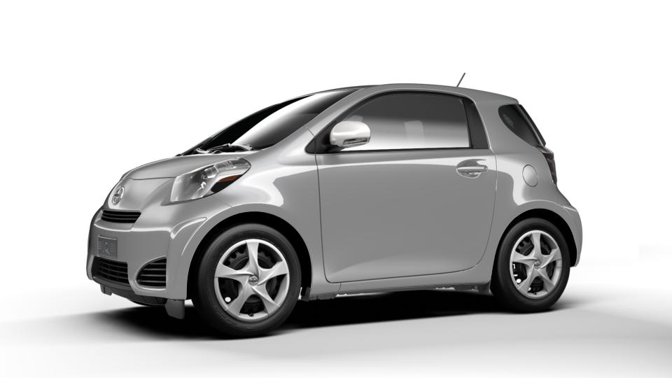

The simplest way to create a Configured 3D Image (C3I) like the one shown below is to use a ViewPanel.  
The basic steps to do this are outlined below.
First, import the javascript file:
<script
type="text/javascript"
language="javascript"
src="/smartClient/api/api.nocache.js">
</script>
Next, create a top-level function called onThreedReady():
function onThreedReady() {
}
This function will be called by the framework once the C3I smart client library is loaded.
Next, create a ThreedSession using the ThreedSessionFactory:
function onThreedReady() {
var factory = new c3i.smartClient.model.ThreedSessionFactory();
factory.setRepoBase("/configurator-content-v2");
factory.setSeries("scion", 2012, "iq");
//this method loads the threed model and creates a ThreedSession
factory.createSession().success(function (threedSession) {
//use threedSession
});
}
Once you have a ThreedSession, use it to set the picks, view and angle:
factory.createSession().success(function (threedSession) {
threedSession.setPicks(["1F7", "SS", "R7", "MDS"]);
threedSession.setView(0); //0=exterior
threedSession.setAngle(2); //2=hero angle
});
Next, add a div to your html page with a class of ViewPanel:
<div class="ViewPanel"></div>
Finally, invoke threedSession.scan() to replace the ViewPanel div with a configured 3D image:
factory.createSession().success(function (threedSession) {
threedSession.setPicks(["1F7", "SS", "R7", "MDS"]);
threedSession.setView(0); //0=exterior
threedSession.setAngle(2); //2=hero angle
threedSession.scan();
});
You should now see a configured 3D image like the one shown above. You can drag-to-spin or swipe-to-spin (on a mobile).
Now, if you update the picks, the view or the angle using any the methods below:
setPicks(..)
setView(..)
setAngle(..)
angleNext(..)
anglePrevious(..)
the configured 3D image will automatically update to reflect those values.
Look at this example live and do a View Source: Easy Demo
Check out the other examples and API docs: